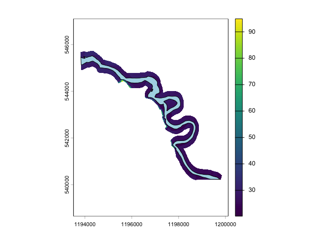
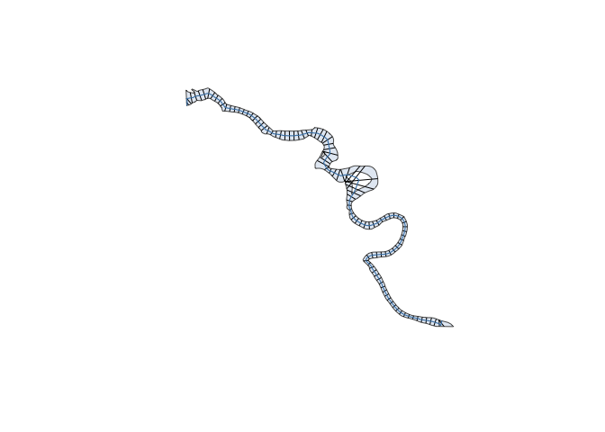
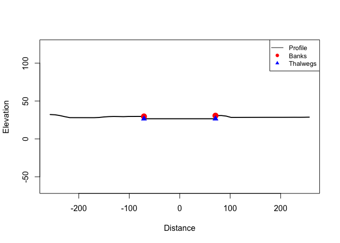
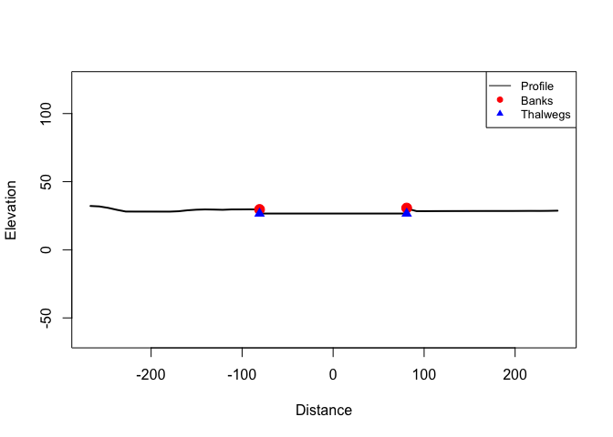
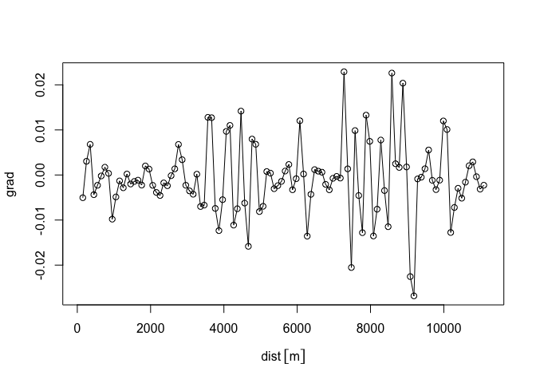

The purpose of xchan is to create, widen (erode), and calculate attributes of watercourse geometries. It does this by encoding a channel by its cross sections, which can be planimetric (line segments arranged on a map) or profile (slices into the landscape).
The package concept is inspired by the sf package, because xchan encodes both cross section objects (xsection) and whole channels (xchan), which are simply a list of cross sections. Most functions in xchan start with a common prefix, xt, in parallel with the sf package’s function prefix, st. The x stands for “cross” or “cross section”.
Statement of Need
Many geomorphic workflows rely on cross sections, but the surrounding tasks are often pieced together from ad hoc scripts: building channels from banklines, attaching surveyed or DEM-derived profiles, widening channels, and calculating attributes such as width, elevation, and gradient.
xchan provides a consistent cross-section-first workflow for those tasks in R. It is designed to make channel geometry easier to build, modify, and analyze in a reproducible way.
Target Audience
xchan is aimed at river scientists, geomorphologists, and other analysts working with banklines, cross sections, channel surveys, and DEMs. It is most useful when channel geometry needs to be created, modified, or compared across many sections.
Installation
You can install the development version of xchan from GitHub with:
# install.packages("devtools")
devtools::install_github("fluvtools/xchan")Example
The package includes spatial data for the Squamish River in British Columbia: a bankline polygon and a DEM. It’s possible to create channels in other ways; see the Getting Started with Channels vignette and Channels with Profiles vignette for more information.
Start by loading the package and unwrapping the packaged DEM, and plotting the bankline polygon on top.
library(xchan)
library(terra)
#> terra 1.9.27
#>
#> Attaching package: 'terra'
#> The following objects are masked from 'package:testthat':
#>
#> compare, describe
dem <- unwrap(squamish_dem)
plot(dem)
plot(squamish_bankline, add = TRUE, col = "lightblue")
Generate planimetric cross sections from the bankline polygon, spaced 500 m apart.
squamish <- xt_generate_plan(squamish_bankline, spacing = 100)
plot(squamish)
If your workflow requires profile cross sections, you can generate them by sampling the DEM at each planimetric cross section (sample_freq = 10 m). The packaged Squamish DEM is LiDAR-derived and does not include submerged bathymetry, so the sampled profiles show a flat water surface rather than a channel. We insert a synthetic rectangular channel 3 m deep with xt_dredge_to().
squamish <- xt_generate_profile(
squamish,
unwrap(squamish_dem),
sample_freq = 10
)
squamish <- xt_dredge_to(
squamish,
bathy = bathy_rectangle(depth = 3)
)
print(squamish, n = 10)
#> xchan channel with 112 cross sections.
#> CRS: EPSG:3005
#> <xsection 1> 73.62634 m
#> <xsection 2> 164.7955 m
#> <xsection 3> 240.1455 m
#> <xsection 4> 180.8922 m
#> <xsection 5> 224.1492 m
#> <xsection 6> 219.8685 m
#> <xsection 7> 215.3935 m
#> <xsection 8> 166.9173 m
#> <xsection 9> 151.5558 m
#> <xsection 10> 141.68 m
#> ... 102 more cross sections
#> With profile viewUnder the hood, a channel is just a list, as hinted at with the print() output.
Including profile cross sections also has the effect of extending the cross sections beyond the banks. Here is what the 10th cross section looks like in its full extent, with an exaggeration factor of 1.5.
plot(
squamish[[10]],
view = "profile",
extent = "full",
exaggerate = 1.5
)
Widen the channel by 20 meters on the right bank.
Take a look at the 10th profile cross section now:
plot(
widened_squamish[[10]],
extent = "full",
exaggerate = 1.5
)
Calculate the new channel widths.
head(xt_width(widened_squamish))
#> Units: [m]
#> [1] 93.62634 184.79546 260.14547 200.89217 244.14918 239.86845Calculate the channel gradient, using the lower bank as the reference elevation.
grad <- xt_gradient(
widened_squamish,
elevation = elevation_bank(min)
)
head(grad)
#> [1] NA -0.005046736 0.003036535 0.006796899 -0.004370093
#> [6] -0.002287416Plot the gradient along the channel axis.
dist <- xt_distance_downstream(widened_squamish)
plot(dist, grad)
lines(dist, grad, type = "l")
To learn more about channel computations like these, see the Channel Computations vignette.
xchan in the Context of Other R Packages
The following packages are relevant for channel geometries in R.
- The centerline package is used to generate a centerline from a bankline polygon.
- The sf package is used to manipulate vector-based spatial objects.
- The terra package is used to manipulate both vector and raster-based spatial objects.
Attribution
The creation of this package would not have been possible without funding from BGC Engineering Inc..